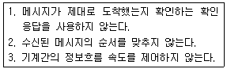
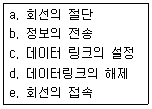
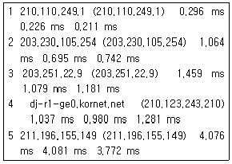
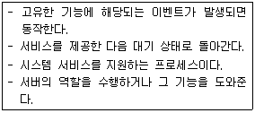
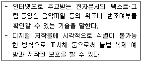
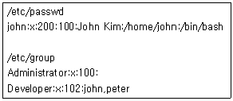

네트워크관리사-1급 (2018-10-28 기출문제)
1과목: TCP/IP
1. IPv6의 특징 중 옳지 않은 것은?
- 브로드 캐스트가 가능하다.
- 128bit의 주소 길이를 갖는다.
- 16bit씩 8부분으로 16진수로 표시한다.
- IPSec을 기본적으로 지원한다.
(정답률: 70%)

2. SNMP에 대한 설명 중 올바른 것은?
- TCP/IP 프로토콜의 IP에서 접속 없이 데이터의 전송을 수행하는 기능을 규정한다.
- 시작지 호스트에서 여러 목적지 호스트로 데이터를 전송할 때 사용된다.
- IP에서의 오류(Error)제어를 위하여 사용되며, 시작지 호스트의 라우팅 실패를 보고한다.
- 네트워크의 장비로부터 데이터를 수집하여 네트워크의 관리를 지원하고 성능을 향상시킨다.
(정답률: 73%)
3. TCP(Transmission Control Protocol)에 대한 설명으로 옳지 않은 것은?
- 네트워크에서 송신측과 수신측간에 신뢰성 있는 전송을 확인한다.
- 연결지향(Connection Oriented)이다.
- 송신측은 데이터를 패킷으로 나누어 일련번호, 수신측 주소, 에러검출코드를 추가한다.
- 수신측은 수신된 데이터의 에러를 검사하여 에러가 있으면 스스로 수정한다.
(정답률: 80%)
4. IGMP에 대한 설명 중 올바른 것은?(오류 신고가 접수된 문제입니다. 반드시 정답과 해설을 확인하시기 바랍니다.)
- 시작지 호스트에서 여러 목적지 호스트로 데이터를 전송할 때 사용된다.
- TCP/IP 프로토콜의 IP에서 접속없이 데이터의 전송을 수행하는 기능을 규정한다.
- 네트워크의 구성원에 패킷을 보내기 위한 하드웨어 주소를 정한다.
- IP에서의 오류(Error) 제어를 위하여 사용되며, 시작지 호스트의 라우팅 실패를 보고한다.
(정답률: 68%)
5. 서브넷이 최대 25개의 IP Address를 필요로 할 때, 서브넷 마스크로 올바른 것은?
- 255.255.255.192
- 255.255.255.224
- 255.255.192.0
- 255.255.224.0
(정답률: 70%)
6. IP Header Fields에 대한 내용 중 옳지 않은 것은?
- Version - 4bits
- TTL - 16bits
- Type of Service - 8bits
- Header Checksum - 16bits
(정답률: 70%)
7. ICMP 프로토콜의 기능으로 옳지 않은 것은?
- 여러 목적지로 동시에 보내는 멀티캐스팅 기능이 있다.
- 두 호스트간의 연결의 신뢰성을 테스트하기 위한 반향과 회답 메시지를 지원한다.
- ′ping′ 명령어는 ICMP를 사용한다.
- 원래의 데이터그램이 TTL을 초과하여 버려지게 되면 시간 초과 에러 메시지를 보낸다.
(정답률: 78%)
8. OSPF에 대한 설명으로 옳지 않은 것은?
- 기업의 근거리 통신망과 같은 자율 네트워크 내의 게이트웨이들 간에 라우팅 정보를 주고받는데 사용되는 프로토콜이다.
- 대규모 자율 네트워크에 적합하다.
- 네트워크 거리를 결정하는 방법으로 홉의 총계를 사용한다.
- OSPF 내에서 라우터와 종단국 사이의 통신을 위해 RIP가 지원된다.
(정답률: 68%)
9. IP 헤더 필드 중 단편화 금지(Don′t Fragment)를 포함하고 있는 필드는?
- TTL
- Source IP Address
- Identification
- Flags
(정답률: 67%)
10. IP Address에 관한 설명으로 옳지 않은 것은?
- ′128.30.1.2′는 B Class에 속한 IP Address이다.
- ′200.200.200.0/24′의 IP Address 대역을 필요에 따라 ′200.200.200.32/27′, ′200.200.200.64/26′ 등으로 Subnetting 하는 것을 VLSM(Variable Length Subnet Masks)이라 한다.
- B Class의 Default Subnet Mask 값은 ′255.0.0.0′이다.
- 주어진 IP 대역에 호스트를 나타내는 bit가 ′n′이면 가용할 호스트의 수는 ′2^n - 2′이다.
(정답률: 75%)
11. 다음 TCP/IP 프로토콜 가운데 가장 하위 계층에 속하는 것은?
- UDP
- FTP
- IP
- TCP
(정답률: 71%)
12. 다음 내용과 같은 특징을 가진 프로토콜은?

- TCP
- ICMP
- ARP
- UDP
(정답률: 67%)
13. 서브넷 마스크에 대한 설명으로 올바른 것은?
- IP Address에서 네트워크 Address와 호스트 Address를 구분하는 기능을 수행한다.
- 여러 개의 네트워크 Address를 하나의 Address로 통합한다.
- Address는 효율적으로 관리하나 트래픽 관리 및 제어가 어렵다.
- 불필요한 Broadcasting Message는 제한 할 수 없다.
(정답률: 78%)
14. TCP 세션의 성립에 대한 설명으로 옳지 않은 것은?
- 세션 성립은 TCP Three-Way Handshake 응답 확인 방식이라 한다.
- 실제 순서번호는 송신 호스트에서 임의로 선택된다.
- 세션 성립을 원하는 컴퓨터가 ACK 플래그를 '0'으로 설정하는 TCP 패킷을 보낸다.
- 송신 호스트는 데이터가 성공적으로 수신된 것을 확인하기까지는 복사본을 유지한다.
(정답률: 67%)
15. 전자우편의 전송에서 두 시스템 간에 전달되어야 할 제어 메시지의 시퀀스를 기술하는 프로토콜은?
- HTTP
- SMTP
- FTP
- IMAP
(정답률: 79%)
16. 응용 계층 수준에서 보안기능을 제공하는 프로토콜은?
- CA
- TLS
- IPSec
- SSH
(정답률: 66%)
2과목: 네트워크 일반
17. HTTP의 응답 메시지(Response Message) 내의 상태 라인(Status Line)은 응답 메시지의 상태를 나타낸다. 다음 중 클라이언트가 요청한 메소드에 대해 응답할 때, 요청된 메소드가 성공적으로 수행되었을 경우 보내는 상태 코드는?
- 204
- 302
- 100
- 200
(정답률: 55%)
18. 주파수 분할 다중화 기법을 이용해 하나의 전송매체에 여러 개의 데이터 채널을 제공하는 전송방식은?
- 브로드밴드
- 내로우밴드
- 베이스밴드
- 하이퍼밴드
(정답률: 77%)
19. ARQ 중 에러가 발생한 블록 이후의 모든 블록을 재전송하는 방식은?
- Go-Back-N ARQ
- Stop-and-Wait ARQ
- Selective ARQ
- Adaptive ARQ
(정답률: 77%)
20. 데이터 전송과정에서 먼저 전송된 패킷이 나중에 도착되어 수신측 노드에서 패킷의 순서를 바르게 제어하는 방식은?
- 순서 제어
- 속도 제어
- 오류 제어
- 연결 제어
(정답률: 86%)
21. 광케이블을 이용하는 통신에서 저손실의 파장대를 이용하여 광 파장이 서로 다른 복수의 광 신호를 한 가닥의 광섬유에 다중화 시키는 방식은?
- 코드 분할 다중 방식(CDM)
- 직교 분할 다중 방식(OFDM)
- 시간 분할 다중 방식(TDM)
- 파장 분할 다중 방식(WDM)
(정답률: 72%)
22. 성형 토폴로지의 특징으로 옳지 않은 것은?
- 중앙 제어 노드가 통신상의 모든 제어를 관리한다.
- 설치가 용이하나 비용이 많이 든다.
- 중앙 제어노드 작동불능 시 전체 네트워크가 정지한다.
- 모든 장치를 직접 쌍으로 연결할 수 있다.
(정답률: 67%)
23. 물리계층의 역할이 아닌 것은?
- 전송매체를 통해서 시스템들을 물리적으로 연결한다.
- 자신에게 온 비트들이 순서대로 전송될 수 있도록 한다.
- 전송, 형식 및 운영에서의 에러를 검색한다.
- 물리적 연결과 동작으로 물리적 링크를 제어한다.
(정답률: 73%)
24. 전송 제어 절차를 순서에 맞게 기술한 것은?

- c-a-b-e-d
- e-c-b-d-a
- c-e-b-a-d
- e-c-d-a-b
(정답률: 67%)
25. LAN 관련 표준안과 그 내용이 다르게 짝지어진 것은?
- IEEE 802.2-LLC
- IEEE 802.3-MAC
- IEEE 802.4-토큰버스
- IEEE 802..5-토큰링
(정답률: 57%)
26. 축적 전송방식의 일환으로 프레임의 수신과 CRC에러 확인 후 목적지로 전송하는 방식으로 프레임의 길이만큼 전달지연이 발생하는 LAN의 스위칭 방식은?
- Cut Throguh
- Store And Forward
- Call Together
- Store And Backward
(정답률: 70%)
27. 인터넷 상의 서버에 소프트웨어, 저장공간 등의 IT 자원을 두고 인터넷 기술을 활용해 이를 웹기반 서비스로 개인용 단말에게 제공하는 기술을 일컫는 용어는?
- 클라우드 컴퓨팅
- 그리드 컴퓨팅
- 분산 컴퓨팅
- 유비쿼터스 컴퓨팅
(정답률: 81%)
3과목: NOS
28. 네트워크 어댑터가 자신에게 오는 패킷뿐만 아니라 네트워크를 통과하는 모든 패킷을 받아들이는 네트워크 설정 모드는?
- Promiscuous 모드
- Quick 모드
- Standard 모드
- Thorough 모드
(정답률: 57%)
29. 호스트 헤더방식을 사용하여 2개의 가상 서버를 설정할 경우 필요한 최소 IP Address 수는?
- 1개
- 2개
- 3개
- 가상서버를 설정할 수 없음
(정답률: 48%)
30. DHCP 서비스 이용 시 이점으로 옳지 않은 것은?
- 새 컴퓨터를 구성 할 때 다시 사용되는 IP Address와 충돌 문제를 일으킬 수 있다.
- 관리자의 단순하고 반복적인 작업에 대한 부담을 덜어 관리효율성 및 TCO(Total Cost of Ownership: 총소유비용)를 절감한다.
- 위치를 자주 바꾸는 이동 또는 휴대용 컴퓨터 사용자에게 적합하다.
- 네트워크의 컴퓨터를 구성하는데 소요되는 시간을 크게 줄일 수 있다.
(정답률: 80%)
31. Linux의 ′ln′ 명령어에 대한 설명으로 옳지 않은 것은?
- 하드링크로 생성된 파일은 원본 파일과 inode가 같다.
- 자신이 액세스 할 수 없는 사용권한을 가졌더라도 ′-f′ 옵션을 사용하면 링크가 가능하다.
- 심볼릭링크를 사용할 때, 원본 파일이 삭제되어도 이 심볼릭링크 파일은 사용할 수 있다.
- 하드링크는 원본 파일을 삭제하더라도 다른 링크된 파일에는 영향이 없다.
(정답률: 67%)
32. 아래 내용은 Linux의 어떤 명령을 사용한 결과인가?

- ping
- nslookup
- traceroute
- route
(정답률: 64%)
33. Linux에서 파일의 접근 권한 변경 시 사용되는 명령어는?
- umount
- greb
- ifconfig
- chmod
(정답률: 76%)
34. DHCP 클라이언트에서는 지정된 간격으로 대여기간을 갱신 받게 되는데 이를 수동으로 하는 명령어는?
- ipconfig /renew
- ipconfig /refresh
- netstat /renew
- netstat /refresh
(정답률: 57%)
35. tar로 묶인 ′mt.tar′를 풀어내는 명령은?
- tar –tvf mt.tar
- tar -cvf mt.tar
- tar –cvvf mt.tar
- tar -xvf mt.tar
(정답률: 64%)
36. Linux에서 기본적으로 생성되는 디렉터리로 옳지 않은 것은?
- /etc
- /root
- /grep
- /home
(정답률: 72%)
37. SOA 레코드의 설정 값에 대한 설명으로 옳지 않은 것은?
- 주 서버 : 주 영역 서버의 도메인 주소를 입력한다.
- 책임자 : 책임자의 주소 및 전화번호를 입력한다.
- 최소 TTL : 각 레코드의 기본 Cache 시간을 지정한다.
- 새로 고침 간격 : 주 서버와 보조 서버간의 통신이 두절되었을 때 다시 통신할 시간 간격을 설정한다.
(정답률: 67%)
38. Linux에서 프로세스의 상태를 확인하고자 할 때 사용하는 명령어는?
- ps
- w
- at
- cron
(정답률: 81%)
39. httpd.conf 파일을 사용하여 Apache 웹 서버를 설정하려고 한다. 주요 설정 항목에 대한 설명으로 옳지 않은 것은?
- ServerRoot : 아파치 웹서버의 각종 설정 파일이 있는 디렉터리를 지정한다.
- Listen : 아파치 웹서버가 사용할 기본 포트(80번)를 설정한다.
- DocumentRoot : 웹사이트에 사용될 각종 파일들이 위치한 디렉터리를 지정한다.
- ServerType : 서버의 실행 방법을 지정하며, Single Mode와 Multi Mode가 있다.
(정답률: 51%)
40. 다음 설명에 해당하는 프로세스는?- 백그라운드로 실행한다.

- shell
- kernel
- program
- deamon
(정답률: 66%)
41. Linux 시스템에서는 하드디스크 및 USB, CD-ROM 등을 마운트(Mount) 해야만 사용할 수 있다. 시스템 부팅시 이와 같은 파일시스템을 자동으로 마운트하기 위한 설정 파일로 올바른 것은?
- /etc/fstab
- /etc/services
- /etc/filesystem
- /etc/mount
(정답률: 50%)
42. Linux 시스템에서 'ls' 라는 명령어 사용법을 알아보는 명령어로 올바른 것은?
- cat ls
- man ls
- ls man
- ls cat
(정답률: 66%)
43. Windows Server 2008 R2의 Windows Server 백업 기능으로 옳은 것은?
- 디스크, 광학미디어 뿐만 아니라 테이프로의 백업도 지원
- 백업할 수 있는 최대 크기는 볼륨당 2TB까지 지원
- FAT으로 포맷된 볼륨도 NTFS로 변환없이 백업 지원
- Windows Server 2003을 비롯한 이전 버전 운영체제의 백업파일 복원 지원
(정답률: 42%)
44. Windows Server 2008 R2에서 사용자관리를 효율적으로 이용하기 위해 그룹관리를 지원한다. 다음 중 그룹관리에 관한 설명으로 옳지 않은 것은?
- 로컬 그룹은 서버에 있는 로컬 사용자 계정을 포함하며, 서버가 멤버인 Active Directory의 사용자나 그룹을 포함 할 수 있다.
- 명령 프롬프트에서 그룹을 생성하는 명령어는 ′net localgroup′이다.
- 로컬 그룹에 도메인 그룹을 추가하여 관리 할 수 있다.
- 그룹을 삭제한 후 동일한 그룹이름으로 생성하면 기존 그룹의 권한이 남아있다.
(정답률: 65%)
45. Linux에서 현재 사용 디렉터리 위치에 상관없이 자신의 HOME Directory로 이동하는 명령은?
- cd HOME
- cd /
- cd ../HOME
- cd ~
(정답률: 61%)
4과목: 네트워크 운용기기
46. 네트워크 장비 중에서 LAN과 LAN을 연결하고 접속하려는 호스트에 도착하기 위한 최적경로를 설정하여 네트워크 간을 연결하는 장치는?
- Router
- Hub
- Repeater
- Bridge
(정답률: 69%)
47. RAID의 기능 중에서 Hot Swap의 기능을 올바르게 설명한 것은?
- 전원이 꺼진 상태에서 디스크를 백업하는 기능이다.
- 전원이 꺼진 상태에서 디스크를 교체하는 기능이다.
- 전원이 켜진 상태에서 데이터를 여분의 디스크에 백업하는 기능이다.
- 전원이 켜진 상태에서 디스크를 교체하는 기능이다.
(정답률: 64%)
48. CISCO 라우터 상에서 OSPF의 Neighbor의 상태를 확인할 수 있는 명령어로 올바른 것은?
- show ip ospf interface
- show ip ospf database
- show ip ospf neighbor
- show ip ospf border-router
(정답률: 68%)
49. OSI 7 계층 모델 중 1 계층에서 동작하는 장비로 옳게 나열된 것은?
- Repeater, Bridge
- Repeater, Hub
- Hub, Router
- Bridge, Router
(정답률: 69%)
50. LAN 카드의 MAC Address에 실제로 사용하는 비트 수는?
- 16bit
- 32bit
- 48bit
- 64bit
(정답률: 62%)
5과목: 정보보호개론
51. 회사의 사설 네트워크와 외부의 공중 네트워크 사이에 중립 지역으로 삽입된 소형 네트워크를 의미하는 용어는?
- DMZ
- Proxy
- Session
- Packet
(정답률: 62%)
52. Linux에서 사용자 계정 생성 시 사용자의 비밀번호에 관한 정보가 암호화되어 저장되는 곳은?
- /usr/local
- /etc/password
- /etc/shadow
- /usr/password
(정답률: 65%)
53. 방화벽(Firewall)에 대한 설명으로 옳지 않은 것은?
- 네트워크 출입로를 다중화하여 시스템의 가용성을 향상 시킨다.
- 외부로부터 불법적인 침입을 방지하는 기능을 담당한다.
- 내부에서 행해지는 해킹 행위에는 방화벽 기능이 사용되지 못할 수도 있다.
- 방화벽에는 역 추적 기능이 있어 외부에서 네트워크에 접근 시 그 흔적을 찾아 역추적이 가능하다.
(정답률: 51%)
54. 다음 중 스니핑(Sniffing) 해킹 방법에 대한 설명으로 가장 올바른 것은?
- Ethernet Device 모드를 Promiscuous 모드로 전환하여 해당 호스트를 거치는 모든 패킷을 모니터링 한다.
- TCP/IP 패킷의 내용을 변조하여 자신을 위장한다.
- 스텝 영역에 Strcpy와 같은 함수를 이용해 넘겨받은 인자를 복사함으로써 스택 포인터가 가리키는 영역을 변조한다.
- 클라이언트로 하여금 다른 Java Applet을 실행시키도록 한다.
(정답률: 61%)
55. 비밀키 암호화 기법에 대한 설명으로 옳지 않은 것은?
- 두 사람이 동일한 키를 소유해야 한다.
- 암호화 알고리즘은 간단하고 편리하지만 키를 관리하기가 어렵다.
- 공개키 암호화 방식에 비해 필요한 키의 수가 적으므로, 전자서명에서도 상대적으로 간단하고 효율적인 시스템을 구축하는 것이 가능하다.
- 키는 각 메시지를 암호화하고 복호화 할 수 있도록 전달자에 의해 공유될 수 있다.
(정답률: 34%)
56. DES 암호 방식에서 사용하는 모드로 옳지 않은 것은?
- EFB(Electronic Feed Back)
- ECB(Electronic Code Book)
- CBC(Cipher Block Chaining)
- OFB(Output Feed Back)
(정답률: 25%)
57. 아래에서 설명하는 기술의 명칭은?

- 공개키 기반구조(PKI)
- SSL(Secure Socket Layer)
- 워터마킹(Watermarking)
- 전자서명(Digital Signature)
(정답률: 62%)
58. 암호 방식 중 블록 암호화 방법에 해당하는 것은?
- A5/1
- AES
- RC4
- SEAL
(정답률: 64%)
59. 파일에 대한 해쉬값을 데이터베이스로 만들어 저장한 후 생성된 데이터베이스와 비교하여 추가·삭제되거나 변조된 파일이 있는지 점검하고 관리자에게 레포팅 해주는 무결성 검사도구는?
- TRIPWIRE
- Nmap
- CIS
- TCP-Wrapper
(정답률: 46%)
60. 다음은 ′/etc/passwd′ 파일의 내용과 ′/etc/group′ 파일의 내용 일부 이다. 이에 대한 설명으로 적절한 것은?

- john의 그룹 ID는 200 이다.
- john은 Developer 그룹을 주그룹으로 갖는다.
- peter는 john과 함께 Developer Group에 속한다.
- peter와 john은 모든 파일들에 대해서 같은 권한을 갖는다.
(정답률: 59%)